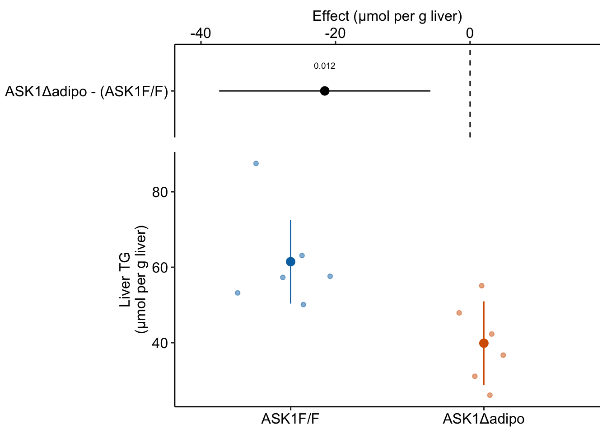
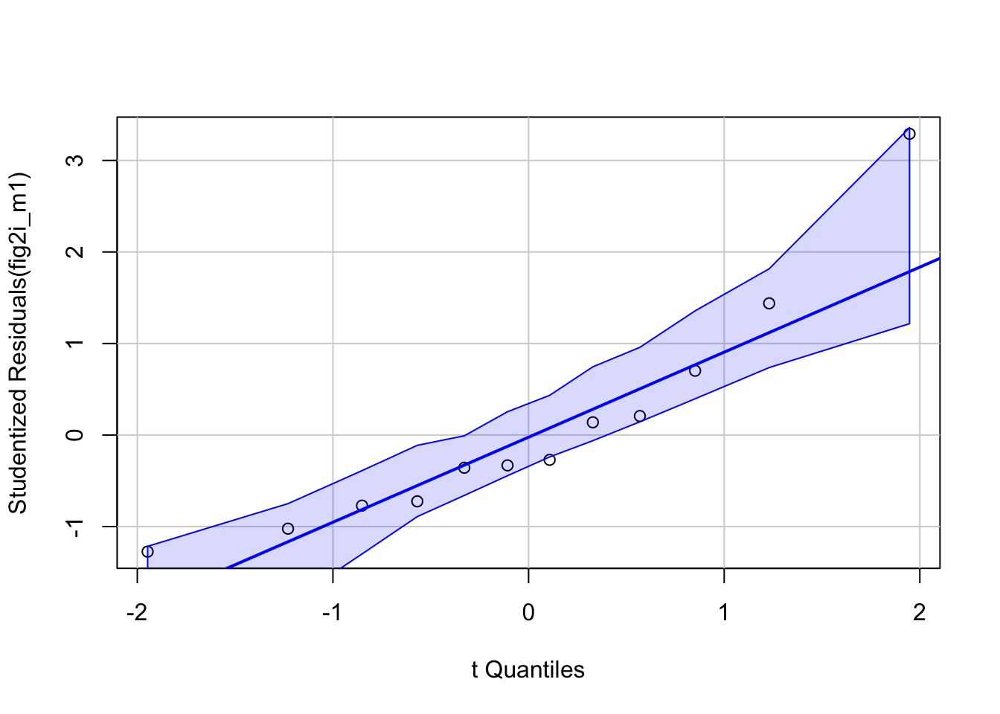
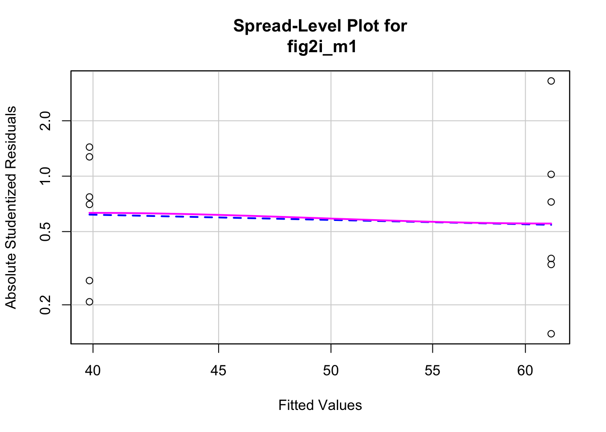

1 Analyzing experimental data with a linear model
1.1 This text is about using linear models to estimate treatment effects and the uncertainty in our estimates. This, raises the question, what is “an effect”?
At the end of this text, I provide an example set of analyses for multiple, related experiments. This example is a goal or target; it’s what you will be working towards as you learn from this text. The data for the analysis come from multiple experiments presented in Figure 2 in the article ASK1 inhibits browning of white adipose tissue in obesity. The chapter preceding the analysis is just enough biology to help you understand the biological importance of each experiment. The data for Figure 2 is from a set of experiments exploring the consequences of adipose-tissue specific deletion of the ASK1 signaling protein on multiple, adverse effects of a high-fat diet in mice, including weight gain, glucose intolerance, and increased liver triacylglycerol levels. I chose the data in Figure 2 of this paper because of the diversity of analyses and plot types. My analyses and plots differ slightly from those of the researchers because I implemented better practices – the stuff of this text.
Here, I use one panel from Figure 2 to outline what the statistical analysis of experimental data is all about. Much of this outline will be repeated in “An introduction to linear models” chapter.
The goal of the experiments is to estimate the effect of the adipose-specific ASK1 deletion. To understand what I mean by “an effect”, and to understand how we can estimate an effect by fiting a linear model to data, let’s peak at the results of the fit model.
For this experiment, the researchers want to know if knocking out the ASK1 gene in the adipose tissue cells lowers the liver triglyceride (TG) level in mice fed a high-fat diet. To investigate this, the researchers compared the TG levels in a group of knockout mice (“ASK1Δadipo” – Δ is the del operator and refers to a deletion in genetics) to the TG levels in a group of control mice (“ASK1F/F”). Specifically, they measured the difference in the mean TG of the control group from the mean TG of the knockout group.
\[ \overline{\texttt{TG}}_\texttt{ASK1Δadipo} - \overline{\texttt{TG}}_\texttt{ASK1F/F} \]
The measured difference in the means is the estimate of the effect of ASK1 deletion on liver TG levels. This estimate is -21.6 µmol per g liver. An effect has the same units as the variable compared (µmol per g liver), a magnitude (21.6 units), and a direction (negative).
My version of Figure 2i, which shows the results of the experiment, is Fig. @ref(fig:ask1-fig2i-ggplot-the-model) above. The direction and magnitude of the estimated effect (the measured difference in means) can be mentally reconstructed by comparing the position of the two group means in the lower part of Fig. @ref(fig:ask1-fig2i-ggplot-the-model). The upper part of Fig. @ref(fig:ask1-fig2i-ggplot-the-model) explicitly shows the estimate and shows the the uncertainty in the estimate using 95% confidence intervals.
The numbers to make this plot come from the coefficient table of the fit model, shown in Table @ref(tab:ask1-fig2i-intro-coef-table). The second row of this table are the statistics for the effect of the knockout on TG levels. The value in the “Estimate” column is the estimated effect (the measured difference in means). The value in the “Std. Error” column is the standard error of the difference in means (SE), a measure of uncertainty of the estimate. We use this SE to compute the statistic for a t-test, from which we get the p-value, the probability of observing a t-value as large or larger than our observed value, if the null were true. The “null is true” not only means the true effect is zero but also assumes a long list of conditions, such as, a random treatment assignment and homogeneity of variance. We also use the SE to compute the 95% confidence intervals of the difference. Understanding what a standard error is and how to interpret confidence intervals is paramount to practicing good statistics. This is covered in the chapter Variability and Uncertainty (Standard Deviations, Standard Errors, and Confidence Intervals).
| Estimate | Std. Error | t value | Pr(>|t|) | 2.5 % | 97.5 % | |
|---|---|---|---|---|---|---|
| (Intercept) | 61.47 | 4.98 | 12.3 | 0.000 | 50.37 | 72.57 |
| treatmentASK1Δadipo | -21.60 | 7.05 | -3.1 | 0.012 | -37.30 | -5.90 |
It is hard to overemphasize that what we measure in experiments is estimated effects. The true effect may be larger, smaller, or even in the reverse direction. This text is all about what we can infer about true effects from the statistical analysis of experimental data. This inference requires that we also measure our uncertainty in our estimate of the effect.
The measured means in each group are computed from a random sample of mice. If we only cared about the six mice in each group in this experiment, then we would not need to fit a linear model to the data to estimate the effect, we could simply compute each group’s mean and subtract the control mean from the knockout mean. But we care more about something more than these dozen mice because we are trying to discover something general about ASK1 regulation of TG levels in mice, generally (and even in mammals, and especially humans, generally). To make this leap of inference, we use a model to claim that each sample mean is an estimate of the respective population mean. Given this model, we can compute the standard error of each mean and the standard error of the difference in means. A standard error is a measure of the sampling variance of a statistic and, therefore, a measure of the precision of the estimate. The standard error, then, is a measure of uncertainty in the estimate. Here is how to think about precision and uncertainty: if we were to repeat this experiment many, many times, we would generate a long list of mean TG levels for the control mice and a long list of mean TG levels for the knockout mice. The less variable the means in each list, the more precise. By using a model, we do not need to repeat this experiment many times to get a standard error.
Better Know: Population
What is a population? In the experimental biology examples in this text, we might consider the population as a very idealized, infinitely large set of mice, or fish, or fruit flies, or communities from which our sample is a reasonably representative subset. For the experiments in the ASK1Δadipo study, the population might be conceived of as the hypothetical, infinitely large set of floxed ASK1 C57BL/6 mice bred in the mouse facility of the researchers under the same rearing conditions. By infinitely large, I mean something like all possible phenotypes that could be born from the nearly-infinite combination of meiosis, gene-gene interactions, genotype-environment interactions, and maternal effects.
The model we are going to fit to the Figure 2i data is
\[\begin{align} y &= \beta_0 + \beta_1 x + \varepsilon\\ \varepsilon &\sim N(0, \sigma^2) \end{align}\]This is a model of how the Figure 2i data were generated. In this model, \(y\) is the liver TG level for some fictional, randomly generated mouse and \(x\) is a variable that indicates the condition of the ask1 gene in randomly generated mouse – a value of 0 is given to mice with a functional ASK1 gene and a value of 1 is given to mice with a knocked out gene.
\(\beta_0\) is the “true” mean of TG in mice fed a high-fat diet and with a functional ASK1 gene. By “true”, I mean the mean that would be computed if we were to measure TG on an infinite number of these mice (exactly what “these mice” means is a good topic for a campfire discussion). The observed mean of the ASK1F/F group is an estimate of \(\beta_0\). The sum \(\beta_0\) + \(\beta_1\) is the true mean of TG in mice fed a high-fat diet but with a knocked out ASK1 gene. This means that \(\beta_1\) is the true difference in the means, or the true effect. The observed difference in means between the ASK1Δadipo and ASK1F/F groups is an estimate of \(\beta_1\). This difference is the estimated effect.
The sum \(\beta_0 + \beta_1 x\) is the expectation of TG, or expected value of TG in a generated mouse given the generating model. This sum equals the true mean of the infinite set of normal mice if \(x = 0\) and equals the true mean of the infinite set of ASK1 knockout mice if \(x = 1\). All generated control mice have the same expected value of TG. All generated knockout mice have the same expectated value of TG.
\(\varepsilon\) is the error for the randomly generated mouse. It is a random number sampled from a Normal distribution with a mean of zero and a variance of \(\sigma^2\). The variation in generated mice has a systematic component due to variation in \(x\) and a random (or stochastic) component due to variation in \(\varepsilon\).
By fitting a model to the data we estimate the parameters \(\beta_0\), \(\beta_1\) and \(\sigma\). It is the estimation of \(\sigma\) that allows us to compute a measure of our uncertainty (a standard error) of our estimates of the means (\(\beta_0\) and \(\beta_0 + \beta_1\)) and of the difference in the means (\(\beta_1\)).
Let’s fit this model to the Figure 2i data using R.
fig2i_m1 <- lm(liver_tg ~ treatment, data = fig2i)Robust inference from the model (generalizing from sample to population, including measures of the uncertainty of our estimates, requires that our data approximates the kind of data we’d expect from the data generating model specified above. All rigorous analysis should use specific model checks to evaluate this. First, the “normality check” – we use a quantile-quantile (QQ) plot to see if our data approximate what we’d see if we sampled from a normal distribution.
set.seed(1)
qqPlot(fig2i_m1, id=FALSE)
95% of quantiles computed from fake samples from the generating model above are inside the two dashed lines in the plot. Our measured quantiles are the open circles. The quantiles from a sample that looks like it was sampled from a normal distribution, or “looks Normal”, should be approximately linear and mostly lie within the dashed lines. Our sample looks good. Regardless, inference is pretty robust to moderate departure from Normal.
Second, the “homogeneity check” – we use a spread level plot to see if there is some pattern to the variance, for example if the spread of residuals is noticeably bigger in one group than another, or if the spread increases with the fitted value.
spreadLevelPlot(fig2i_m1, id=FALSE)
Suggested power transformation: 1.294553 This looks pretty good. Given these checks, lets move on and look at the table of model coefficients.
fig2i_m1_coef <- cbind(coef(summary(fig2i_m1)),
confint(fig2i_m1))| Estimate | Std. Error | t value | Pr(>|t|) | 2.5 % | 97.5 % | |
|---|---|---|---|---|---|---|
| (Intercept) | 61.5 | 4.98 | 12.3 | 0.000 | 50.4 | 72.6 |
| treatmentASK1Δadipo | -21.6 | 7.05 | -3.1 | 0.012 | -37.3 | -5.9 |
The two values in the column “Estimate” are the estimates of \(\beta_0\) and \(\beta_1\). The top value (61.5) is the mean of the control mice (the units are µmol/g). The mean of the knockout mice is the sum of the two values (39.9 µmol/g). And the effect of ASK1 deletion on TG levels is simply the second value (-21.6 µmol/g). The standard error of the effect is 7.05 µmol/g.
We can use the standard error to compute a t-value (-3.1, in the column “t value”). A t-value is a test statistic. The probability (“p value”) of the significance test is 0.012. This if the probability of sampling a t-value as large or larger than the observed t-value, if we were to sample from a null distribution of t-values (a distribution of sampled t values if the true value of \(\beta_1\) was 0). We can also use the standard error to compute a 95% confidence interval of the effect. The lower bound of this interval is -37.3 µmol/g and the upper bound is -5.9 µmol/g. A confidence interval is another way of communicating uncertainty, and the way advocated in this text. In a 95% confidence interval, 95% of similarly constructed intervals (from hypothetical sampling of six mice from the ASK1 normal population and six mice from the ASK1 knockout population) will contain the true mean. Another way to think about a confidence interval is, it is the range of true differences that are compatible with the data, where compatible means “not rejected” by a t-test (a t-test between the estimated effect and any number inside the interval would return a p-value greater than 0.05).
Here is how we might report this result in a paper:
Mean TG level in ASK1Δadipo mice on a high-fat diet was 21.6 µmol/g less than that in ASK1F/F mice on a high-fat diet (95% CI: -37.3, -5.9, \(p = 0.012\)) (Fig.@ref(fig:ask1-fig2i-ggplot_the_model)).